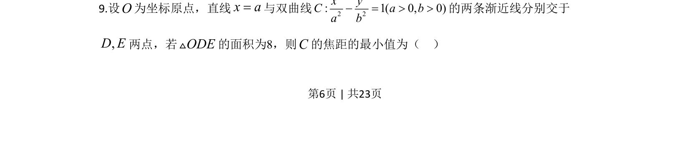
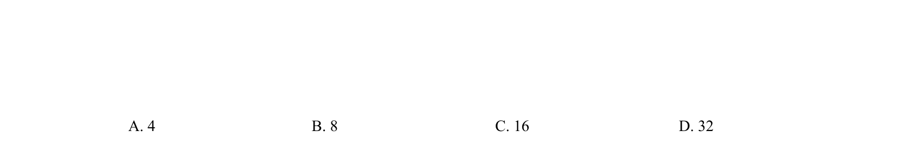
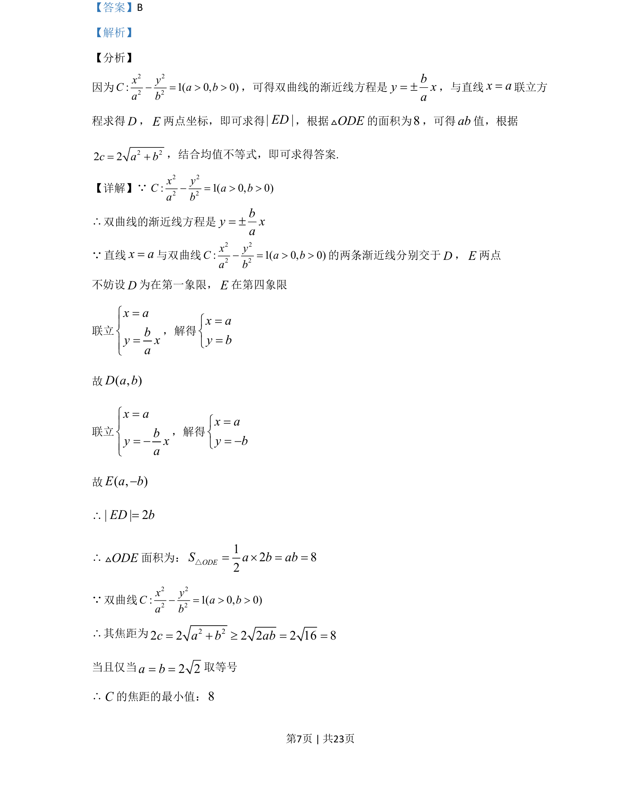
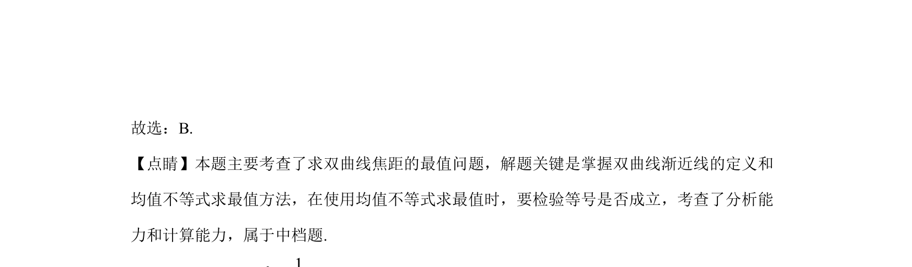

考点：渐近线 点到直线距离公式 均值不等式 三角形面积


本题通过双曲线渐近线与直线交点求三角形面积，结合焦距与均值不等式求最值。


📄 原 PDF 第 6 页：
素材/真题/吉林/2008-2024·（吉林）数学高考真题/2020年高考数学试卷（文）（新课标Ⅱ）（解析卷）.pdf
9.设O为坐标原点，直线x a=与双曲线 2 22 2: 1( 0, 0)x yC a ba b- = > >的两条渐近线分别交于 ,D E两点，若ODEV的面积为8，则C的焦距的最小值为（ ）